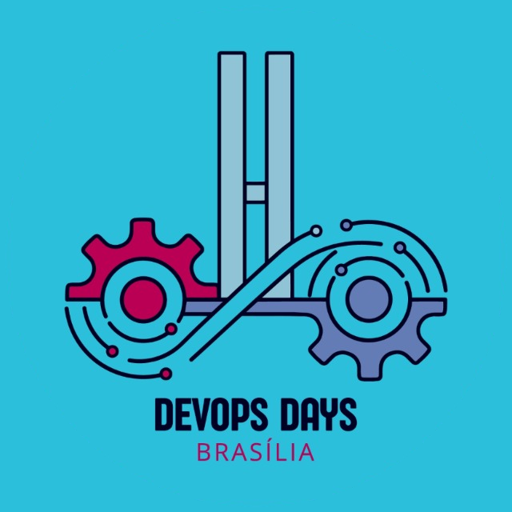

DevOps Days Brasília 2026
Talos Linux: um OS
minimalista e sem SSH
para o Kubernetes
Emerson Silva · 4Linux
Baixar PDF
Abrir em tela cheia (HTML)
Roteiro da demo
Seu navegador não exibe PDF embutido.
Abrir o PDF